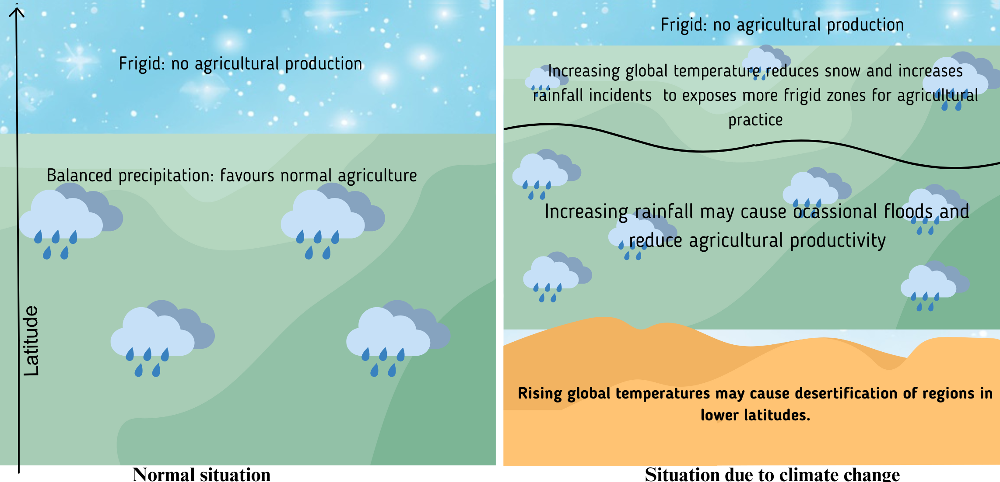

What is the IPCC?
Last update: May 05, 2023
Let us begin with the basics. Though the Intergovernmental Panel on Climate Change (IPCC) has risen to prominence only recently, it was established in the year 1988 by the United Nations Environment Programme (UNEP) and the World Meteorological Organization (WMO). The idea behind creating IPCC was to have a body that would comprehensively review the existing information on climate change, consolidate it in a palatable form, and provide response strategies with respect to the social and economic impact of climate change.
You may skip directly to the relevant section from the blog outline.
Since its inception, the IPCC has released six assessment reports (AR). The first AR, in the year 1990, identified climate change as a global problem which required a concerted global action. The second AR was out in 1995 and provided important scientific inputs for the adoption of Kyoto Protocol in 1997. The third AR was released in 2001 with emphasis on need for adaptation to the climate change. Fourth AR was published in the year 2007 with focus on limiting the global warming to 2 ℃. The fifth AR was out in 2014 and provided scientific inputs for the Paris Agreement.
Usually, each AR is accompanied by various summaries for policy makers, and sub-sections focused on various issues and subjects. In addition to the ARs, the IPCC also publishes special reports on various pressing issues related to the climate change. A complete list of the IPCC reports can be accessed here.
Nobel Peace Prize: IPCC’s rise to prominence
IPCC, for its significant contribution, was awarded the Nobel Peace Prize (together with Al Gore) in the year 2007 pushing this organization to prominence. The Nobel Prize committee agreed that climate change is a major global challenge and the IPCC had laid a great foundation for disseminating the information for greater good.
A complete press release from the Norwegian Press Committee can be read here. But to summarize, the Committee agreed that:
” … climate change, if not mitigated, can result in mass human migration, loss of jobs, and conflicts due to dwindling resources. Thus, timely action on climate change by the governments can help prevent wars, conflicts and human suffering.”
A lot of organizations are engaged in myriad areas of research; however, I hope that the above quote gave you an idea why IPCC was awarded the Nobel Peace Prize.
IPCC AR6 on Climate Change and Food Security
Observable effects due to hydrological cycle and water availability
Impacts on crop productivity
Human-induced climate change has significantly influenced the hydrological cycles and availability of freshwater for agriculture. The assessment report 5 (AR5) had concluded with high confidence that the climate change-induced drought had negative effect on the agricultural productivity. Even though the amount of wet-precipitation has increased in many regions, leading to flood and water logging, the evidence for correlation between floods and food production was limited.
The authors of the AR6 highlight that 68 % of the irrigated croplands experienced scarcity of blue water (see the note for definition) at least one month per year, and 37 % of the irrigated croplands suffered from drought for at least 5 months per year. Most importantly, agricultural water scarcity was experienced mostly in low-income countries.
Green water: soil moisture used for agriculture and forestry
Blue water: Irrigation water from lakes, rivers, reservoirs, and aquifers. Used for drinking purposes as well.
Grey water: the water that was used and has some impurities. E.g. Household and industrial wastewater.
Drought is regarded as the major driver of yield reduction globally, especially in the arid and semi-arid regions. Drought and heat waves have reduced crop output in 75 % of the harvestable area. The AR6 cites a report suggesting 11.6%, 12.4%, and 9.2% reduction in global average yields of maize, soyabeans and wheat, respectively, due to the combined effect of heat and drought. In contrast, the temperature alone was a major driver of agricultural productivity loss in regions considered wet.
In addition to the agricultural productivity, the livestock production has also been negatively affected by changing seasonality, increased frequency of drought, higher temperatures and vector-borne diseases. Furthermore, the climate change is also linked to poor productivity of forage crops and their reduced nutritive value.
Climate change-induced increased severity of floods have also led to crop losses due to harvest failure and increased fungal infection. Waterlogging, surface flooding, soil erosion, and susceptibility to salinization are also some factors attributed by the AR6 to crop loss with negative consequences on food security.
The report highlights that the anthropogenic climate change has increased the probability of extreme precipitation events in some countries. For example, the rainfall event in Bangladesh in March and April of 2017 destroyed 220,000 ha of paddy crop – leading to 30 % increase in the paddy prices at year-on-year basis. This would have put heavy financial burden on many families, considering rice as their staple food item.
Similarly, the devastating flood in Pakistan in August 2022 inundated one-third of the country, and affected 33 million people. Though beyond the scope of the AR6 report, the World Weather Attribution Report (WWA) assessed that the 5-day maximum rainfall, a measure of heavy precipitation, was around 75 % more intense than normal, and can be attributed directly to the climate warming by 1.2 ℃.
As per the AR6, the subsistence farmers in drier regions are most vulnerable to the anthropogenic climate change-induced crop failures and food insecurity. However, the temperate regions, that were previously frigid, will benefit from more warmer days and see increased agricultural production. But this would also mean desertification and crop failures in the tropical and sub-tropical regions (see Figure 1 ).

The AR6, for the first time, has expanded its scope beyond the staples like maize, wheat and rice. The report has identified some literature on the effects of climate change on vegetables, fruits, nuts and fibre; however, it also highlights that research on these crops is still not sufficient to link the effects due to climate change with confidence.
Starchy tubers and roots, like tapioca and potato, are important staples in many parts of the world. Climate change has influenced the rate of tuber development and the impact is region specific. The tubers are particularly sensitive to drought and heat during early stages of development. Thus, unpredictable weather, heat stress or drought can negatively affect the tuber production of vulnerable regions.
With regards to tree crops, the climate change has influenced the harvest stability, disease, and phenology (especially the winter chill requirement of trees like apple). Warmer temperatures may cause early emergence of flowers and result in mismatch with the precipitation pattern. Altered temperature regimes have affected apple acidity and its texture which can affects its shelf life and market price. The perennial crops are particularly vulnerable to the vagaries of climate change because the farmers have little scope to adjust their planting or cropping time and location.
Though cotton is expected to grow well with increasing temperature, the proliferation of cotton bollworm pest has negatively affected the cotton output. This brings us to a section where AR6 decides to talk about agricultural pests.
Impacts on pests, diseases and weeds
There is dearth of high-quality historical and concurrent observation on pests and diseases; however, more frequent disease outbreaks and expansion of area under pests is reported due to climate change. A study was cited by AR6 that indicates poleward expansion of many diseases at the rate of 2.7 km/ yr (The radius of Earth is 6,371 Km. Do your math considering that the pests are already long way towards the poles).
Increased carbon dioxide availability, efficient irrigation facilities, and enhanced precipitation may increase competitiveness of weeds and favour invasive species, especially the C3 species that constitute approximately 85% of plant species, most of which are weeds (see the box below). Furthermore, rising carbon dioxide and climate change is also expected to reduce herbicide efficiency. Thus, climate change is not only expected to affect weeds biologically, the management will also be affected.
- C3 plants: majority of plants on Earth are C3 photosynthetic in which the first carbon compound produced contains three carbon atoms. Sparing the biochemical details, it is important to know that the key enzyme responsible to fix carbon dioxide can also use oxygen but the end result of this fixation is toxic in nature and the plant has to spend time and energy to fix this. Hence, more atmospheric CO2 will give advantage to the C3 weeds.
- Also, the C3 plants have to let their stomata (pores in leaves) open to let in carbon dioxide. In this process, the water vapour is also lost from the same pores. Thus, C3 crops are at disadvantage in drought and high temperatures.
Pests are mostly ectotherms, thus increasing temperature may favour detoxification of pesticides. Thus, more pesticides would be required to elicit same effect. Furthermore, increased precipitation will also wash off pesticides, further reducing the efficacy of pesticides on plants and more toxins in run off. India’s largest locust attack in 27 years is an example of increasing severity and territory expansion of pests.
Higher tropospheric ozone has resulted in yield losses in 2010-2012 that averaged 12.4%, 7.1%, and 6.1% for soyabean, wheat, rice, and maize, respectively. Higher ozone exacerbates the effects of climate change because higher temperature results in increased ozone production and higher uptake by plants. India’s current yield loss of wheat and rice due to higher ozone is estimated as 36% and 20%, respectively.
The AR6 presents yield constraint score (Figure 5.4 in the AR6) wherein the effect of 5 stressors (soil nutrients, pests and diseases, heat stress, aridity, and ozone) have been evaluated on soyabean and wheat productivity. It appears that the productivity will be challenged the most by pests and diseases, especially in India and African regions. Heat is the second most severe stress and is expected to affect most in Northern India, Pakistan, Kazakhstan, and the neighbouring countries.
Vulnerability indices (risk scores etc.)
On a larger scale, southern Africa, western and central Asia are more vulnerable to climatic hazards due to poor coping ability.
The major crops have received considerable attention and stand better chance surviving climate change risks. However, reduced agrobiodiversity puts global food security at risk. Minor crops have largely remained ignored and may suffer from climate hazards as their improved varieties are usually not available. Furthermore, the crop-dependent vulnerability will have to be looked through the lens of gender and social inequities as some segments of our societies are far less equipped to bear the losses from lower crop productivity.
Projected Impact on major crops
Analysis of over 100 research papers between 2014 and 2020 forecasts a negative effect on major crops in the following manner:
-2.3 % for maize
-3.3 % for soyabean
-0.7 % for rice
-1.3 % for wheat.
However, these reports do not consider technological advances and adaptation measures.
Rising temperatures reduces soil carbon and nitrogen, affecting productivity. Similarly, elevated CO2 reduces nutrients such as protein, iron and zinc.
The report also spreads doom and gloom on the productivity of other crops such as fruits, vegetables, and tubers.
Climate change will also reduce the species of pollinators, the pollinator activity, and flower receptiveness. As per an estimate, complete removal (not very realistic situation) can reduce global fruit supply by 23 % , vegetable by 16 %, nuts and seeds by 22 %, leading to global malnutrition. So save those honeybees, even if you hate that they sting.
There is a rising concern on reducing bees population due to climate change, excessive use of neonictinoid pesticides and varroa mites. There are also concerns that the mismatch between flower emergence and pollinator life cycle due to climate change could also kill pollinator colonies.
Adaptation
Personally I believe that humans are resilient and they always come up with the right solutions when needed. For example, long ago it was predicted that considering the fuel efficiency of our early vehicles we would exhaust fossil fuels soon enough. However, we now have fuel efficient vehicles and I am planning to fill my scooter, that gives a mileage of 40 Km per litre in city, with petrol tomorrow.
Similarly, the farmers are adapting. Possible adaptation strategies could range from field and farm-level technical interventions to livelihood diversification and income protection. For example, the AR6 reports that most farmers are preferring early varieties, or the varieties with shorter life span to mitigate climate risk. This an example of farm-level intervention. However, the existing studies deem the current farm and field-level interventions as inadequate. Despite our current and projected interventions, the costs required to adapt is going to rise from USD 63 billion at 1.5 ℃ to USD 80 billion at 2 ℃. and to USD 128 billion at 3 ℃. – an exponential rise. This will have a significant impact on our major crops. Therefore, current models are not suitable to design adaptation strategies. Instead, an enhancement in models that take into account productivity, sustainability, GHG emissions along with variations at local-level and future climatic variability.
The AR6 mentions at least 10 types of adaptation options of which shift in crop and water management appear most promising. Integrating agronomy and agroforestry, application of indigenous technical knowledge, and removing entry barriers for minor crops can also be good adaptations strategies for some cultivars.
Furthermore, the AR6 mentions that it is not just the crop that needs interventions, but integration of social security is also required. For example, climate services, shifting subsidies towards minor crops (favouring diversification), public procurement of diverse food, insurance at cheaper rates, and insentivising diversification through efforts like agrotourism are prominently highlighted.
Climate Change and Fisheries
Fisheries and aquaculture often remains a least discussed topic when the effect of climate change on food security is brought up. This is despite the sector providing livelihoods to 10-12 % of world’s population. Globally, fish contributes to more than 20 % of animal protein intake for more than 3.3 billion people and in countries like Bangladesh, Indonesia and Sierra Leone fish can contribute to more than 50 % their average per capita intake of animal protein. Discussion on the importance of aquaculture and fisheries is beyond the scope of this particular article, and I would suggest the readers to quickly glance through the FAO’s annual publication titled State of World Fisheries and Aquaculture (SOFIA).
The average ocean temperature has increased by 0.88 ℃ from 1850 – 1900 to 2011 – 2020. Marine heatwaves have intensified. For example the El Nino during 2013 – 2015 was immediately succeeded by a much stronger 2015 – 2016 heatwave, resulting in warmer than usual ocean temperature affecting fish migration, distribution of plankton and this availability of fish.
The atmospheric CO2 dissolved in water to form carbonic acid. The surface open pH has reduced globally in the last 40 years at the rate of 0.003 – 0.026 per decade. To add to the insult, the oceanic dissolved oxygen between 0 – 1000 m depth has also decreased by 0.5 – 3.3 % between 1970 and 2010. Due to warmer surface temperature, a sharp and strong thermal gradient is also being created which affects the nutrient recycling in the ocean and hence, the availability of fish. Furthermore, the aquatic ecosystems around the globe are experiencing nutrient enrichment from human effluents which promotes weed proliferation and sedimentation and loss of wetland connectivity. Human civilizations have developed along the water bodies and any change in them will eventually force alterations in distribution of human population.
The pelagic oceanic resources are over-fished and the global capture fishery has stagnated, albeit the harvest that is deemed sustainable has reduced by 4.1 % globally due to ocean warming in some regions. There are reports of changes in traditional fishing grounds due to altered physico-chemical parameters of oceanic waters.
While fish is considered a healthy food, warming oceans, eutrophication, and algal blooms have resulted in increasing trends in seafood-related illnesses due to algal toxins, ciguatera and Vibrio. Some evidences also suggest that climate change cold also increase risks of bioaccumulation of chemicals of concern, such as mercury and other toxic trace elements.
Freshwater ecosystems are more vulnerable as they have limited buffering capacity, and fish could have limited scope to escape the changing scenario. It is estimated that declines in dissolved oxygen in freshwater are 2.75 – 9.3 times greater than the oceans.
It is projected that climate change will reduce global fisheries productivity, especially in tropical and subtropical regions. There is a projected decline in global animal biomass in oceans by 5 % under the RCP2.6 (RCP 2.6 envisions negative CO2 emissions and limiting of earth’s temperature rise to 2 ℃; something we are finding difficult to achieve). The animal biomass may decrease by 17 % under RCP 8.5 by 2100, with an average decline of 5 % for every 1 ℃ of warming. In contrast, the polar animal biomass may experience a 20 – 80 % by 2100 under RCP8.5. Stock-specific effects will be visible. New fishing regions may open up in enclosed seas like the Mediterranean and the Black Sea.
Currently, the fishing in 54 % of international waters would go non-profitable without government subsidies. As per the projections (under RCP8.5) the maximum revenue potential from landed catches will decrease by 10.4% by 2050, in comparison to 2000. China and India will be most stressed due to climate change.
Adaptation to climate change in fisheries sector
Reducing overfishing and unsustainable practice can reduce vulnerability of fish stocks to the climate change. Changing targeted species or even providing alternative employment to fishermen could help. Freshwater stocks will need to be more aggressively managed and freshwater bodies should be integrated with other sectors that require effective water management for public health.
Climate Change and Aquaculture
The inland aquaculture in Southeast Asian countries is considered highly vulnerable due to climate change induces fluctuations in water resources, flooding, salinity ingress or unpredictable precipitation.
Predicted sea-level rise will cause ingress of saline water into coastal freshwater ponds and aquaculture systems. The projections predict suitable habitat expansions and short-term growth benefits for fish until 2090, when most fish will reach their upper thermal tolerance range. Lack of freshwater and food safety concerns are the most prominent consequences of climate change as per the AR6.
Marine aquaculture is predicted to be affeced most by acidification, eutrophication and harmful algal blooms. Lack of suitable protein replacement for fish meal and fish oil is expected to hamper growth of shrimp aquaculture. Overall, aquaculture production of shrimps and seaweeds is expected to decline.
Adaptation strategies for aquaculture
Aquaculture itself is considered an adaptation strategy to reduce overfishing in oceans. However, climate stress is expected to bring troubles to the aquaculture sector that can be partly mitigated through effective funding and awareness. Land-based aquaculture industry will have to reduce its reliance on water usage and fish meal. This means, more capital requirement and energy demand.
Women are an important part of the aquaculture and fishery supply chain yet they remain underpaid and overexploited. Their social wellbeing, in case their wages are affected by climate change, needs to be ensured. Early warning systems to prepare for floods etc. and integrating aquaculture with livestock may help mitigate some losses.
Conclusion
Overall, the picture isn’t bright. On a global scale, the climate change will have negative effects on all food production systems. However, the polar regions may benefit from warming though this benefit may not last longer!